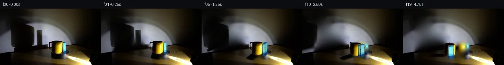

![首帧]()

Round 00
2026-11-05T04:16:07.994193+00:00像素候选变化代码 +297/−0inspection 更新
pixels 400995b2ec70b949 · code 0f5131712a96591c
查看本轮 generate.py 真实 diff
--- previous/generate.py
+++ current/generate.py
@@ -0,0 +1,297 @@
+"""Local numeric pixel synthesis; no models, network, or external renderer."""
+from pathlib import Path
+import json
+import numpy as np
+from PIL import Image, ImageDraw
+from scipy.ndimage import map_coordinates, gaussian_filter, binary_dilation
+from scipy.sparse import coo_matrix, eye
+from scipy.sparse.linalg import spsolve
+import artifact_io
+
+ROOT = Path(__file__).resolve().parent
+SOURCE = np.asarray(Image.open(ROOT / 'first_frame.png').convert('RGB'), dtype=np.float64)
+H, W = SOURCE.shape[:2]
+YY, XX = np.mgrid[:H, :W].astype(float)
+SS = 4
+HY, HX = np.mgrid[:H*SS, :W*SS].astype(float)
+HX = (HX + .5)/SS - .5
+HY = (HY + .5)/SS - .5
+
+
+def polygon_mask(points, holes=(), size=(W,H), scale=SS):
+ out = Image.new('L', (size[0]*scale, size[1]*scale))
+ draw = ImageDraw.Draw(out)
+ draw.polygon([(round((x+.5)*scale),round((y+.5)*scale)) for x,y in points], fill=255)
+ for hole in holes:
+ draw.polygon([(round((x+.5)*scale),round((y+.5)*scale)) for x,y in hole], fill=0)
+ return np.asarray(out,dtype=float)/255
+
+
+def reduce(a):
+ return a.reshape(H,SS,W,SS,*a.shape[2:]).mean(axis=(1,3))
+
+
+def sample(a,x,y,order=1):
+ if a.ndim==2:
+ return map_coordinates(a, [y,x], order=order, mode='nearest', prefilter=order>1)
+ return np.stack([map_coordinates(a[...,c], [y,x], order=order, mode='nearest', prefilter=order>1)
+ for c in range(a.shape[2])], axis=-1)
+
+
+def smooth_fill(source, mask):
+ """Discrete thin-plate RGB interpolation, with the surrounding pixels fixed."""
+ mask = mask.astype(bool)
+ ny,nx = source.shape[:2]
+ ids = np.full((ny,nx),-1,dtype=int)
+ ids[mask] = np.arange(mask.sum())
+ domain = binary_dilation(mask)
+ domain[[0,-1],:]=False
+ domain[:,[0,-1]]=False
+ ry,rx=np.where(domain)
+ rows=[];cols=[];vals=[]
+ rhs=np.zeros((len(rx),3))
+ for dy,dx,v in [(0,0,-4),(0,1,1),(0,-1,1),(1,0,1),(-1,0,1)]:
+ cy,cx=ry+dy,rx+dx
+ k=ids[cy,cx]
+ unknown=k>=0
+ rows.extend(np.flatnonzero(unknown));cols.extend(k[unknown]);vals.extend(np.full(unknown.sum(),v))
+ rhs[~unknown]-=v*source[cy[~unknown],cx[~unknown]]
+ A=coo_matrix((vals,(rows,cols)),shape=(len(rx),mask.sum())).tocsr()
+ normal=A.T@A+eye(mask.sum(),format='csr')*1e-7
+ out=source.copy()
+ out[mask]=spsolve(normal,A.T@rhs)
+ return np.clip(out,0,255)
+
+
+# Masks are measured exclusively from numeric RGB samples of the source.
+MUG_POINTS=[(132,83),(133,82),(137,81),(148,81),(154,82),(158,84),
+ (159,88),(158.7,101),(157.8,109),(155.5,112.3),(151,114.5),
+ (145,115),(140,113.7),(134,112),(131,110),(131.5,90)]
+HANDLE_POINTS=[(136,85),(130,83.5),(125,84.5),(122,86),(120.5,91),
+ (121,98),(122,101),(128,104),(134,106),(137,105)]
+HANDLE_HOLE=[(131,87),(128,86.8),(126,88),(125,91),(125,96),
+ (127,99),(131,99),(133,97),(134,91),(133,88)]
+mug_hi=polygon_mask(MUG_POINTS)
+handle_hi=polygon_mask(HANDLE_POINTS,[HANDLE_HOLE])
+blue_hi=polygon_mask([(160,85.5),(163,85),(167,86),(168,89),(168,114.5),
+ (166,116),(160,114.5),(158.8,108),(159,89)])
+mug=reduce(mug_hi);handle=reduce(handle_hi);blue=reduce(blue_hi)
+
+# Restore only the wall areas hidden by the original silhouettes. The thin
+# plate system enforces continuous values/gradients at the surrounding wall.
+main_wall=reduce(polygon_mask([(24,16),(55,14),(76,30),(79,40),(91,49),
+ (94,96),(84,103),(40,114),(24,108)]))>.01
+small_wall=reduce(polygon_mask([(91,52),(109,52),(114,62),(114,89),
+ (111,97),(91,97)]))>.01
+wall_cut=113-.105*XX
+main_wall &= YY<wall_cut
… diff truncated; 210 more lines …